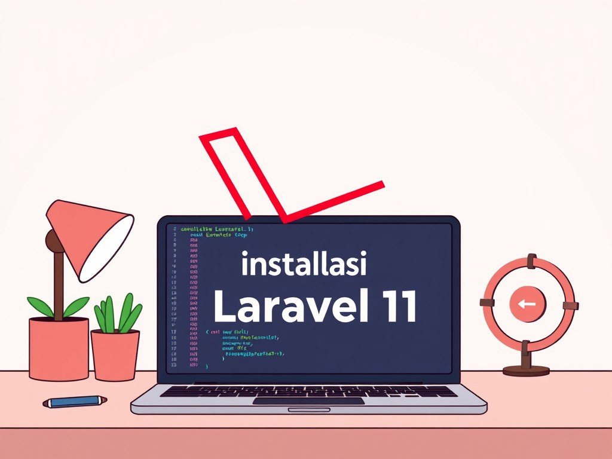

Laravel
Standardisasi Environment Laravel 11 Skala Produksi
Mendokumentasikan konfigurasi krusial pada level infrastruktur. Meliputi tuning koneksi database, manajemen antrean tingkat lanjut...
Baca Analisis